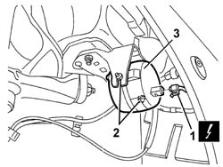

5580E40 anti-theft device siren - r+r
- Path
- Procedures > 55 ELECTRICAL EQUIPMENT > 5580 SPECIAL ACCESSORIES > 5580E anti-theft device > 5580E40 anti-theft device siren - r+r
- Kind
- repair procedure (removal / refitting; the operation number is the code)
- Applies to
- all engines; all production periods
- Interactive page
- https://sloeber94.github.io/elrnDB-a147/en/#/3025622
Applies to: all engines; all production periods
 Removing
Removing
 Refitting
Refitting7055B64 Engine compartment DUST shield in front wheel arch (one), left or right - R.R. (left side)
7055B42 Additional FRONT WHEEL ARCH (one), left or right - R.R. (left side)
1. Disconnect the electrical connections.
 | Name | Connector |
|---|---|---|
1 | Alarm siren |
2. Loosen the nuts fixing the alarm.
3. Remove the alarm.

Applies to: all engines; all production periods
Refitting
RemovingCheck that the alarm is not damaged.
Position the alarm in its housing.
Tighten the nuts.
Connect the electrical connection to the alarm.
Connect the battery.
Check the operation of the system using the Examiner or the other diagnostic equipment.
7055B42 Additional FRONT WHEEL ARCH (one), left or right - R.R. (left side)
7055B64 Engine compartment DUST shield in front wheel arch (one), left or right - R.R. (left side)
Topics linked from this page (3)
- 7055B42 Additional FRONT WHEEL ARCH (one), left or right - R.R.
- 7055B64 Engine compartment DUST shield in front wheel arch (one), left or right - R.R.
- P90 Alarm siren